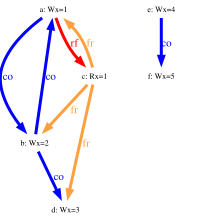
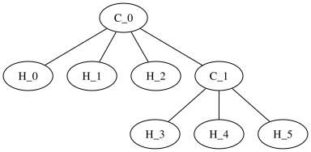
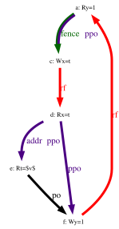
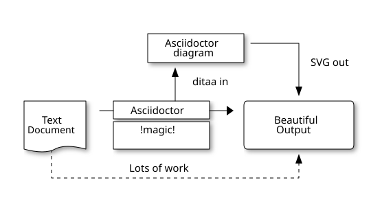
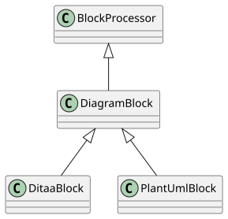
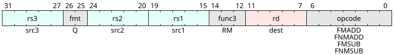

RISC-V Authoring and Editing Guide Authoring and Editing RISC-V Specs Chapter 7. Graphics For the latest stable version, please use RISC-V Authoring and Editing Guide v0.25! 7.1. Graphics Graphics help people learn, break up text, and can overall improve your document content. While AsciiDoc can render graphics in all popular formats, by far the highest quality graphics rendering is from .svg format. This format is the preferred graphic type to use in RISC-V documents. The asciidoctor-diagram extension supports numerous diagram types. Some types that are common are: 7.1.2. Wavedrom diagrams in specifications 7.1.4. Graphviz 7.1.6. Bytefield diagrams 7.1.5. Ditaa diagrams You can certainly use one of the other supported types, but know that they might cause issues with the build. Please contact the RISC-V docs team before using them. 7.1.1. Graphics best practices Follow these guidelines for graphics. Store your graphics in a subfolder. For the RISC-V main ISA doc, this folder is the images folder. Place your graphic in the subfolder that correspondes to its type. The build process creates the final image object. Do not create any generated image files into GitHub. Introduce your graphic with a lead-in sentence. "The following image shows …" Use "following" and "preceding" to locate your image. Avoid using "above" or "below" (Doesn’t make sense for people that use screen readers.) Avoid using text in your image. If it can be included as regular text, then don’t include it as part of the image. (screen readers again). Images should support your text. Do not put important information in only an image. 7.1.2. Wavedrom diagrams in specifications Wavedrom diagrams are used mainly for registers. To specify a wavedrom file, create a json file and then call it from your text. For more information, see WaveDrom sequence diagrams. The following json-formatted script, when added within an AsciiDoc block with the macro indicators [wavedrom, ,svg], embeds the diagram output into the PDF: .Figure title [wavedrom,target="op-32-add-wavedrom",] .... {reg:[ { bits: 7, name: 0x3b, attr: ['OP-32'] }, { bits: 5, name: 'rd' }, { bits: 3, name: 0x0, attr: ['ADD.UW'] }, { bits: 5, name: 'rs1' }, { bits: 5, name: 'rs2' }, { bits: 7, name: 0x04, attr: ['ADD.UW'] }, ]} .... The macro [wavedrom, , ] includes two commas and leaves a blank space as an implicit indicator to the build processor to auto-generate identifiers for the images after they are created. After the first comma, you can insert a name as an identifier of the file that is created in the /images directory for embedding in the PDF. DO NOT make the mistake of simply using [wavedrom,svg]. Without the second comma, the build interprets 'svg' as a target name because it is the second value within the macro. In the specifications, there are numerous instances in which several Wavedrom diagrams are grouped and presented as a single figure. To handle these cases while preserving consistency in how the build renders figure titles, use a minimalistic, white graphic with the filename image_placeholder.png that blends in with the page background. The following example shows the pattern of its use (minus the macro indicator [] in the first line): include::images/wavedrom/instruction_formats.adoc [[instruction_formats]] .Test for wavedrom image::image_placeholder.png[] With the following result: Figure 1. Test for wavedrom Wavedrom code for all diagrams in this illustration are stored under partials/wavedrom; the generated SVGs land in images/wavedrom at build time. Link target that, along with settings in the book_header file, automates the inclusion, in the text, of the figure number and caption. Figure caption. "Invisible" placeholder needed for figure caption to display consistently and correctly. 7.1.3. Explanation For the previous example to build into a diagram that includes a figure title, and a figure title and a macro the specifies the diagram type before the code block. You can add a target filename and, in addition, specify the image output format to be svg. When prepended to the javascript for a Wavedrom diagram, the following creates file-name.svg with the legend Figure title: .Figure title [wavedrom,target="file-name",svg] Following are some examples of Wavedrom diagrams: .Figure title [wavedrom,target="op-32-add-uw",] .... {reg:[ { bits: 7, name: 0x3b, attr: ['OP-32'] }, { bits: 5, name: 'rd' }, { bits: 3, name: 0x0, attr: ['ADD.UW'] }, { bits: 5, name: 'rs1' }, { bits: 5, name: 'rs2' }, { bits: 7, name: 0x04, attr: ['ADD.UW'] }, ]} .... Figure 2. For this example, the output format was not specified, so it defaults to a png. Figure 3. Wavedrom example with svg output specified Wavedrom Conversion The following string is lacking macro brackets ([]) that should appear after filename.adoc because adding the brackets causes the include to activate even though it’s within a code block. Best practice for automated diagramming is to save AsciiDoc files containing properly formatted AsciiDoc blocks, each block containing the code or script for either a single diagram or a group of diagrams that are presented together as a single figure. include::partial$wavedrom/filename.adoc 7.1.4. Graphviz The Unpriv appendices contain Graphviz diagrams with associated keys that are arranged in tables. While in the LaTeX version, the diagrams and tables are arranged side-by-side, for the AsciiDoc version; each Graphviz diagram should be directly above the key table. store scripts for Graphviz diagrams in the examples/graphviz directory, as <filename>.txt import the Graphviz by reference using the pattern in the following example. Graphviz digrams .Sample litmus test graphviz::example$graphviz/litmus_sample.txt[align="center"] [cols="2,1"] _Key for sample litmus test_ [width="60%",cols="^,<,^,<",options="header",align="center"] |=== |Hart 0 | |Hart 1 | | |latexmath:[$\vdots$] | |latexmath:[$\vdots$] | |li t1,1 | |li t4,4 |(a) |sw t1,0(s0) |(e) |sw t4,0(s0) | |latexmath:[$\vdots$] | |latexmath:[$\vdots$] | |li t2,2 | | |(b) |sw t2,0(s0) | | | |latexmath:[$\vdots$] | |latexmath:[$\vdots$] |(c) |lw a0,0(s0) | | | |latexmath:[$\vdots$] | |latexmath:[$\vdots$] | |li t3,3 | |li t5,5 |(d) |sw t3,0(s0) |(f) |sw t5,0(s0) | |latexmath:[$\vdots$] | |latexmath:[$\vdots$] |===  Figure 4. Sample litmus test Key for sample litmus test Hart 0 Hart 1 li t1,1 li t4,4 (a) sw t1,0(s0) (e) sw t4,0(s0) li t2,2 (b) sw t2,0(s0) (c) lw a0,0(s0) li t3,3 li t5,5 (d) sw t3,0(s0) (f) sw t5,0(s0) The procedures for Graphviz diagrams are similar but not identical to procedures for [Wavedrom diagrams in specifications]. Following is an example of Graphviz diagram source: .Graphviz s [graphviz, target="ethane",svg] .... Counter-enable (`mcounteren`) register. include::partial$bytefield/examplebyte.adoc[]} C_0 -- H_1 [type=s]; C_0 -- H_2 [type=s]; C_0 -- C_1 [type=s]; C_1 -- H_3 [type=s]; C_1 -- H_4 [type=s]; [bytefield] (defattrs :plain [:plain {:font-family "M+ 1p Fallback" :font-size 24}]) (def row-height 40 ) (def row-header-fn nil) (def left-margin 100) (def right-margin 100) (def boxes-per-row 32) (draw-box "MXLEN-1" {:span 16 :text-anchor "start" :borders {}}) (draw-box "0" {:span 16 :text-anchor "end" :borders {}}) (draw-box "Interrupts" {:font-size 18 :span 17 :text-anchor "end" :borders {:top :border-unrelated :bottom :border-unrelated :left :border-unrelated}}) (draw-box (text "(WARL)" {:font-weight "bold"}) {:font-size 18 :span 15 :text-anchor "start" :borders {:top :border-unrelated :bottom :border-unrelated :right :border-unrelated}}) (draw-box "MXLEN" {:font-size 24 :span 32 :borders {}}) } .... This renders as:  Figure 5. Graphviz s  Figure 6. An example graphviz diagram from a specification 7.1.5. Ditaa diagrams Following is source for simple ditaa diagram: [ditaa,target="image-example",svg] .... +-------------+ | Asciidoctor |-------+ | diagram | | +-------------+ | SVG out ^ | | ditaa in | | v +--------+ +--------+----+ /---------------\ | | --+ Asciidoctor +--> | | | Text | +-------------+ | Beautiful | |Document| | !magic! | | Output | | {d}| | | | | +---+----+ +-------------+ \---------------/ : ^ | Lots of work | +-----------------------------------+ .... Which renders to:  Following is source for a simple plantuml diagram: [plantuml, diagram-classes, svg] .... class BlockProcessor class DiagramBlock class DitaaBlock class PlantUmlBlock BlockProcessor <|-- DiagramBlock DiagramBlock <|-- DitaaBlock DiagramBlock <|-- PlantUmlBlock .... Which renders to:  Asciidoctor supports additional diagram types. For information on additional diagram types, see the Asciidoctor-diagram documentation. 7.1.6. Bytefield diagrams Bytefield diagrams are used for register graphics that cannot be rendered in wavedrom. For more information, see Bytefield diagrams. Bytefield diagrams look similar to the following example. (defattrs :plain [:plain {:font-family "M+ 1p Fallback" :font-size 24}]) (def row-height 40 ) (def row-header-fn nil) (def left-margin 30) (def right-margin 30) (def boxes-per-row 32) (draw-column-headers {:height 24 :font-size 24 :labels (reverse ["0" "1" "" "" "" "" "" "" "" "" "" "" "" "" "" "" "" "" "" "" "" "" "" "" "" "" "" "" "" "" "HSXLEN-1" ""])}) (draw-box "Guest External Interrupts" {:span 18 :text-anchor "end" :borders {:left :border-unrelated :top :border-unrelated :bottom :border-unrelated}}) (draw-box (text "(WARL)" {:font-weight "bold" :font-size 24}) {:span 13 :text-anchor "start" :borders {:top :border-unrelated :bottom :border-unrelated}}) (draw-box "0" ) (draw-box "HSXLEN" {:font-size 24 :span 31 :borders {}}) (draw-box "1" {:borders {}}) Then you can include it with the following statement (the {} are to keep it from rendering): {.Counter-enable (`mcounteren`) register. include::partial$bytefield/examplebyte.adoc[]} After the build, it looks like this example: Figure 7. Counter-enable (mcounteren) register. 7.1.7. Editing Wavedrom diagrams for Unpriv 7.1.7.1. Relevant contextual information Wavedrom is a utility that is available at https://wavedrom.com/. 7.1.7.2. Example Wavedrom code, before and after Following is an example Wavedrom file that is typical of one the needs just a few edits, minus the [] brackets that indicate a macro (because using the macro even within a code block activates a process in the Asciidoctor build): {reg: [ {bits: 7, name: 'opcode', attr: ['FMADD', 'FNMADD', 'FMSUB', 'FNMSUB'], type: 8}, {bits: 5, name: 'rd', attr: 'dest', type: 2}, {bits: 3, name: 'func3', attr: 'RM', type: 8}, {bits: 5, name: 'rs1', attr: 'src1', type: 4}, {bits: 5, name: 'rs2', attr: 'src2', type: 4}, {bits: 2, name: 'fmt', attr: 'Q', type: 8}, {bits: 5, name: 'rs3', attr: 'src3', type: 4}, ]} This renders as follows:  For convenience, it makes sense to line up the type: attribute so that it remains easy to see: {reg: [ {bits: 7, name: 'opcode', type: 8, attr: ['FMADD', 'FNMADD', 'FMSUB', 'FNMSUB'], }, {bits: 5, name: 'rd', type: 2, attr: 'dest', }, {bits: 3, name: 'func3', type: 8, attr: 'RM', }, {bits: 5, name: 'rs1', type: 4, attr: 'src1', }, {bits: 5, name: 'rs2', type: 4, attr: 'src2', }, {bits: 2, name: 'fmt', type: 8, attr: 'Q', }, {bits: 5, name: 'rs3', type: 8, attr: 'src3', }, ]} The output remains the same: For each line that contain a single value for the attr attribute: add [] to contain additional values—and-- follow the convention for commas to contain and separate additional values until all the lines contain the same number of values for attr that are in the 'opcodes' row: {reg: [ {bits: 7, name: 'opcode', type: 8, attr: ['FMADD', 'FNMADD', 'FMSUB', 'FNMSUB'], }, {bits: 5, name: 'rd', type: 2, attr: ['dest','dest','dest','dest',],}, {bits: 3, name: 'func3', type: 8, attr: ['RM','RM','RM','RM',], }, {bits: 5, name: 'rs1', type: 4, attr: ['src1','src1','src1','src1',], }, {bits: 5, name: 'rs2', type: 4, attr: ['src2','src2', 'src2', 'src2', ], }, {bits: 2, name: 'fmt', type: 8, attr: ['Q','Q','Q','Q',], }, {bits: 5, name: 'rs3', type: 8, attr: ['src3','src3','src3','src3',], }, ]} Wavedrom makes use of straight single quotes like '' rather than diagonal single quotes like ``. Here’s the result: Check the LaTeX version of the diagram to check for the numerical values that are needed within the missing row: {reg: [ {bits: 7, name: 'opcode', type: 8, attr: ['8', 'FMADD', 'FNMADD', 'FMSUB', 'FNMSUB'], }, {bits: 5, name: 'rd', type: 2, attr: ['6', 'dest','dest','dest','dest',], }, {bits: 3, name: 'func3', type: 8, attr: ['4', 'RM','RM','RM','RM',], }, {bits: 5, name: 'rs1', type: 4, attr: ['6', 'src1','src1','src1','src1',], }, {bits: 5, name: 'rs2', type: 4, attr: ['6', 'src2','src2', 'src2', 'src2', ], }, {bits: 2, name: 'fmt', type: 8, attr: ['4', 'Q','Q','Q','Q',], }, {bits: 5, name: 'rs3', type: 8, attr: ['6', 'src3','src3','src3','src3',], }, ]} Now the diagram should contain all of the content that exists within the LaTeX version: If you or a member of your team can build locally, please ensure that someone checks that the diagrams build without errors. Generate a PR to the convert2adoc branch and indicate whether you or a member of the team has tested your changes in a local build. As always, thanks for your participation in the success of RISC-V. 7.1.7.3. Caveats for editing wavedrom diagrams At the time of this writing, we have noticed the following unexpected results during diagram builds using the asciidoctor-pdf toolchain, as follows: Some, but not all, unicode that works in AsciiDoc (see [useful-unicode] ) actually breaks the Wavedrom diagram build, and other unicode does not break the Wavedrom diagram build but still doesn’t render properly. Latexmath appears to not work at all in Wavedrom diagrams. After struggling to understand why various options that we explored for an acceptable ≠ in Wavedrom diagrams and discovering the above rather confusing results, we decided to use != as a workaround. With the fact that both Asciidoctor and Wavedrom are evolving, and also the fact that bytefield is being considered as an alternative diagrams rendering solution, it seems possible that this workaround will be temporary. Chapter 6. Index and Bibliography Chapter 8. Vale at RISC-V